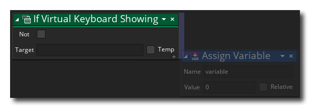

Si se muestra el teclado virtual Si se muestra el teclado virtual
Si se muestra el teclado virtual Si se muestra el teclado virtual Esta acción se puede usar para verificar si el teclado virtual del SO se muestra o no. La acción evaluará a true cuando el teclado está abierto o abriéndose, o false Si el teclado virtual está cerrado o cerrando. Si habilitas la not Modificador, esta acción se invertirá y podrá almacenar la devolución. true / false valor en una variable de destino, que se puede marcar como temp (local).
Tenga en cuenta que para agregar acciones al bloque "si", se deben colocar al lado de la acción, como se muestra en la siguiente imagen:
 Estas acciones ahora se ejecutarán si el "if" se evalúa como true, mientras que cualquier acción eliminada en otro lugar se realizará después del bloque "if".

El código de bloqueo de la acción anterior verifica la acción del mouse hacia abajo y, si se detecta una, se realiza una verificación para ver si se muestra el teclado virtual del SO. Si no lo está, entonces está configurado para mostrar, usando un tipo de teclado numérico, y si ya se muestra, entonces está oculto.